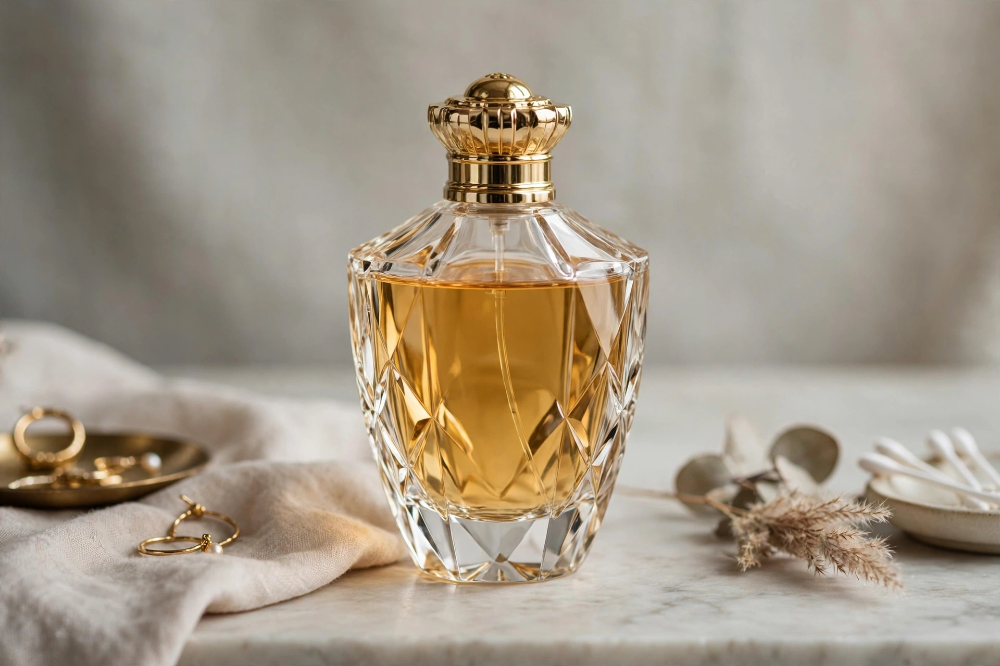

| Perfume | |
|---|---|
 | |
| Main ingredients | Fragrant oils, aroma compounds, fixatives, alcohol |
| Note structure | Top, heart (middle), base |
| Historic centres | Grasse (France), ancient Egypt, Mesopotamia |
Perfume is a mixture of fragrant essential oils or aroma compounds, fixatives, and solvents, usually in liquid form, used to give the human body, animals, food, objects, and living spaces a pleasant scent. The word derives from the Latin per fumum, "through smoke", reflecting the early practice of perfuming through burning aromatics such as incense. Resins like myrrh have been perfume ingredients since antiquity.
The world's first recorded chemist is considered to be Tapputi, a Mesopotamian perfume maker mentioned on a cuneiform tablet from the second millennium BCE. Perfumery flourished in ancient Egypt, in the Islamic Golden Age — where distillation techniques were refined and rose water produced — and in Renaissance Europe. The town of Grasse in southern France became a centre of the industry, and in 1709 Giovanni Maria Farina created Eau de Cologne in Germany. Modern perfumery began in the late 19th century with the commercial synthesis of aroma compounds such as vanillin and coumarin.
A perfume is conventionally described as an accord of top notes (perceived immediately, often citrus or light florals), heart notes (the body of the fragrance, often floral or spicy), and base notes (long-lasting woods, resins, musk, and vanilla, which also act as fixatives). Concentrations range from perfume extract (20–30% aroma compounds) down through eau de parfum and eau de toilette to light eau de Cologne (2–4%).
Natural sources include flowers (rose, jasmine, tuberose), fruits, spices, woods (sandalwood, cedar), resins (frankincense, myrrh, benzoin), and animal products historically such as musk and ambergris, now largely replaced by synthetics. Synthetic aroma compounds, produced since the 19th century, make up a large share of modern formulations and allow scents not found in nature.